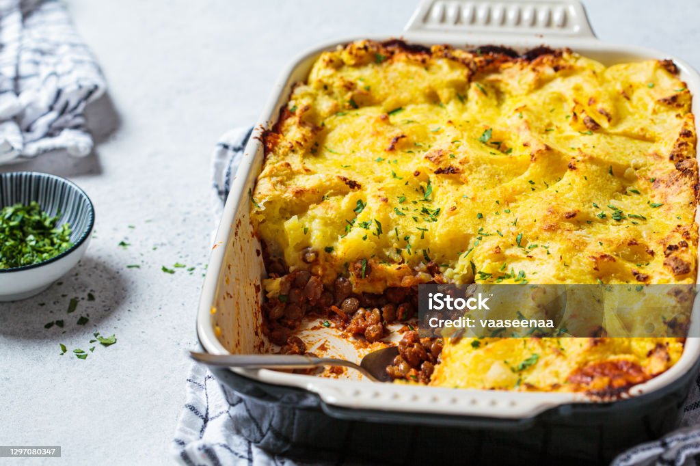

Shepherds Pie

Classic Shepherds Pie
This Classic Shepherds pie is made with ground beef (of lamb) with vegetables in a rich gravy, topped with cheesy mashed potatoes and baked.
Ingredients
Meat Filling:
- 2 Tbsp olive oil
- 1 cup chopped onion
-
- 1 lb lean ground beef or lamb
-
- 2 Tsp dried parsley
-
- 1 Tsp dried rosemary
-
- 1 Tsp dried thyme
-
- 1/2 Tsp salt
-
- 1/2 Tsp black pepper
-
- 1 Tbsp Worcestershire Sauce
-
- 2 minced garlic cloves
-
- 2 Tbsp all purpose flour
-
- 2 Tbsp tomato paste
-
- 1 cup beef broth
-
- 1 cup frozen mixed peas & carrots
-
- 1/2 cup frozen corn kernels
-
- 1 1/2 - 2 lb russet potatoes
-
- 8 Tbs unsalted butter
-
- 1/3 cup half & half
-
- 1/2 Tsp garlic powder
-
- 1/2 Tsp salt
-
- 1/3 Tsp black pepper
-
- 1/4 cup parmesan cheese
-
Instructions:
Make The Meat Filling
- Add oil to a large skillet over med-high heat for 2 minutes. Add onoins and cook for 5 minutes.
- Add the ground beef (or gound lamd) to the skillet and beark it apart. Add parsley, rosemary, thyme, salt and pepper. Mix well and cook until meat is browned.
- Add the Worcestershire sauce and garlic, stire to combine cooking for 1 minute.
- Add flour and tomato paste, stir to incorporate.
- Add broth, peas, carrots and corn. Bring the liquid to a boil then reduce to simmer, roughly 5 mintues.
- Set the mixture aside and preheat oven to 400F
Make the Potato Topping
- Cut the potatoes into smaller pieces and add to a large pot. Cover with water and bring the water to a boil. Cook until potatoes are fork tender.
- Drain the water from the potatoes.
- Add butter, half & half, garlic powder, salt and pepper. Mash the potatoes and str until all ingredients aremixed together.
- Add parmesan cheese and stire to combine.
Assembly
- Pour the meat mixture into a 9x9 inch baking dish. Spread mixture to make an even layer. Spoon the potatoes on of the meat and spread to make an even layer.
- Baked uncovered for 25-30 mintues, cool for 15 mintues before serving.
Home